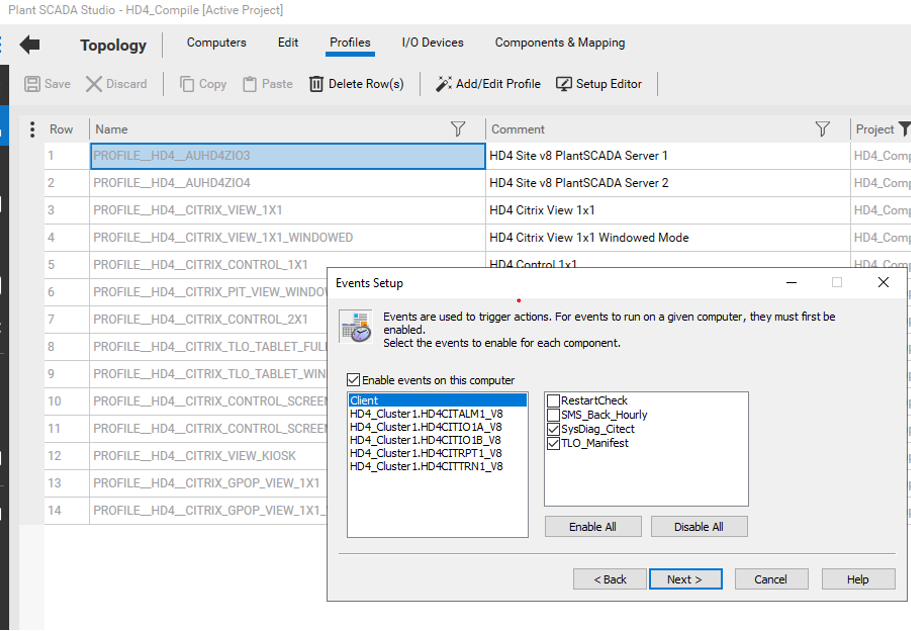
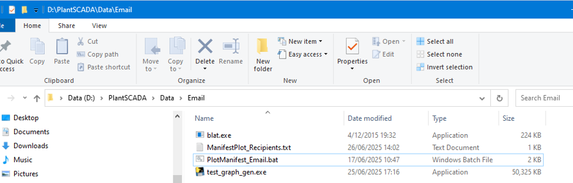

For TLO Loading data from every wagon is already collected. However, this data is rarely used and never visualised.
After a train is completed a cicode function is triggered. This creates a .txt file with every wagons loading data.
After the cicode creates the input txt file the executable is called. This processes the input file and outputs the pdf plots. Next, a batch file for emailing the pdf manifest to recipients is triggered.
